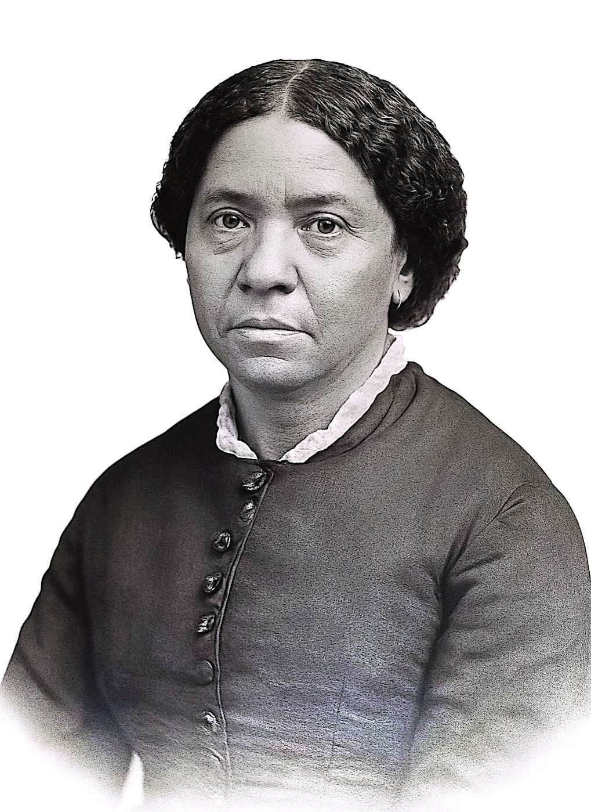
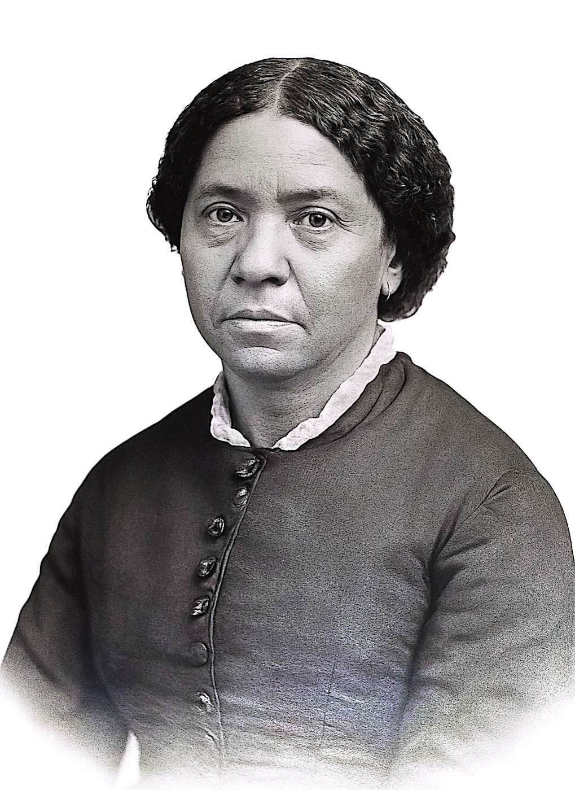

About Harriet Jacobs
Full Name: Harriet Ann Jacobs
Born: February 11, 1813 Edenton, North Carolina
Died: March 7, 1897 Washington, D.C.
Known For: Incidents in the Life of a Slave Girl (1861), written under the pseudonym Linda Brent.
When Did Harriet Jacobs Come to Cambridge?
Harriet Jacobs likely arrived in Cambridge, Massachusetts around 1860 , shortly before the start of the Civil War and soon after publishing her autobiography Incidents in the Life of a Slave Girl in 1861 . By 1862 , she was already active in New England, continuing her advocacy for formerly enslaved people and African American communities. In Cambridge, she lived on Story Street and remained involved in social and educational work throughout the 1860s and beyond.
Why Did Harriet Jacobs Come to Cambridge?
- To work and support her family: Cambridge offered jobs for Black women and was home to progressive communities.
- Help Freed People After Emancipation: She organized aid and support for formerly enslaved people in the South.
- To engage in abolitionist activism: Cambridge and nearby Boston were key centers of antislavery organizing.
What Did She Do in Cambridge?
- Ran a Boarding House: On Story Street, offering shelter to educators and activists.
- Relief Work: Collected supplies and donations to help newly freed slaves.
- Advocated for Education: Raised money to build schools for Black children.
- Gave Lectures & Traveled: Spoke publicly and traveled to South Carolina and Georgia to establish schools.
- Activism and Education: She supported Black education and built strong networks with Northern women reformers.
- Lived at the corner of Story and Mount Auburn Streets from 1870 to 1872.
- One of her boarders was Christopher C. Langdell, the first dean of Harvard Law School.
- Later, she moved to Washington D.C. where she lived the rest of her life.
Legacy in Cambridge
Harriet Jacobs work in Cambridge and her writings continue to inspire movements for racial justice and equality. Her advocacy for education and her efforts to uplift the African American community laid important groundwork for future generations.
- Established schools and aid systems for freedmen, backed by Cambridge support.
- Strengthened abolitionist networks between North and South.
- Her work laid foundations for Reconstruction-era humanitarian aid.
Jacobs Connection to 17 Story Street
Harriet Jacobs never owned 17 Story Street; she only rented it during her time in Cambridge.
Today, a group of activists, historians, and residents—including Harvard professor Danielle S. Allen—are working to preserve 17 Story Street as a memorial and museum to honor Jacobs’ life and legacy.
However, the property is currently privately owned by Janet Jiang, who plans to convert it into a high-end hotel.
Gallery
 
